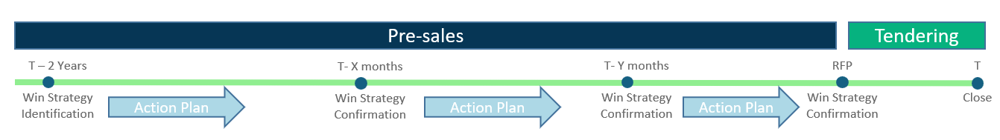

Win Strategy Formulation
Developing Winning Strategies
I specialize in developing and implementing winning strategies to enhance your competitive position and improve your chances of success in the tendering process. Whether initiated well in advance or just ahead of an impending bid, my Win Strategy Process provides significant value at any stage.

My Approach
- Workshops and Analysis: I conduct a series of workshops designed to gather and analyze customer drivers and pain points, assess the competitive landscape, and define a Win Strategy that positions your business as the preferred vendor.
- Stakeholder Participation: The process involves the participation of key stakeholders and subject matter experts to ensure a comprehensive understanding of the customer's requirements, the competition's strengths and weaknesses, and your own capabilities.
- Strategy Development: Based on the insights gathered, I develop a tailored Win Strategy that highlights your competitive advantages and addresses the customer's key concerns.
Timely Implementation
For best results, initiate the Win Strategy Process one to two years before submitting an offer, allowing for iterative improvements over time. However, starting the process at the beginning of bid preparation can still provide significant value.

Why Choose My Win Strategy Formulation Services?
My Win Strategy Formulation services are designed to integrate seamlessly into your existing operations, providing expert strategy formulation support without significant costs. I bring years of experience and a proven track record, allowing you to focus on your core business while I handle the intricacies of developing a winning strategy.